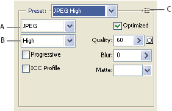

JPEG optimization options
JPEG is the standard format for compressing continuous-tone images such as photographs. Optimizing an image as a JPEG format relies on lossy compression, which selectively discards data.
Note: Since image data is lost when
saving a file in JPEG format, it’s a good idea to save the source
file in its original format (for example, Photoshop .PSD) if you
plan to edit the file further or create additional JPEG versions.

Optimization settings for JPEG
- A.
- File Format menu
- B.
- Compression Quality menu
- C.
- Optimize menu
- Quality
- Determines the level of compression. The higher the Quality setting, the more detail the compression algorithm preserves. However, using a high Quality setting results in a larger file size than using a low Quality setting. View the optimized image at several quality settings to determine the best balance of quality and file size.
- Optimized
- Creates an enhanced JPEG with a slightly smaller file size. The Optimized JPEG format is recommended for maximum file compression; however, some older browsers do not support this feature.
- Progressive
-
Displays the image progressively in a web browser. The image appears
as a series of overlays, enabling viewers to see a low-resolution
version of the image before it downloads completely. The Progressive
option requires use of the Optimized JPEG format.
Note: Progressive JPEGs require more RAM for viewing and are not supported by some browsers.
- Blur
- Specifies the amount of blur to apply to the image. This option applies an effect identical to that of the Gaussian Blur filter and allows the file to be compressed more, resulting in a smaller file size. A setting of 0.1 to 0.5 is recommended.
- ICC Profile
- Preserves the ICC profile of the artwork with the file. Some browsers use ICC profiles for color correction. This option is available only after you saved an image with an ICC profile—it is not available for unsaved images.
- Matte
-
Specifies a fill color for pixels that were transparent in
the original image. Click the Matte color swatch to select a color
in the color picker, or select an option from the Matte menu: Eyedropper
(to use the color in the eyedropper sample box), Foreground Color,
Background Color, White, Black, or Other (to use the color picker).
Pixels that were fully transparent in the original image are filled with the selected color; pixels that were partially transparent in the original image are blended with the selected color.